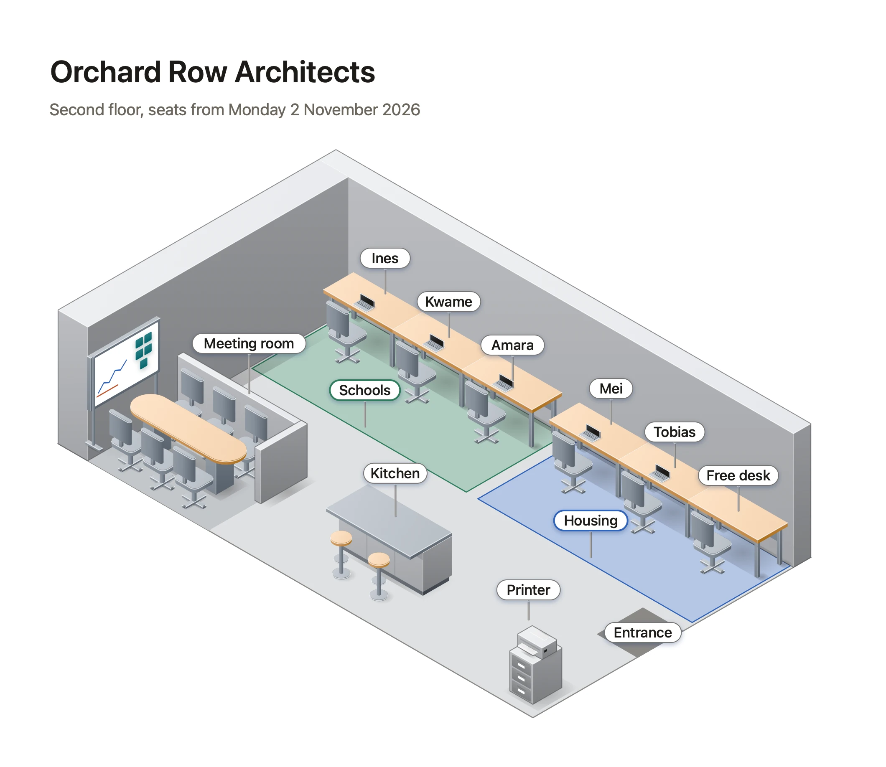
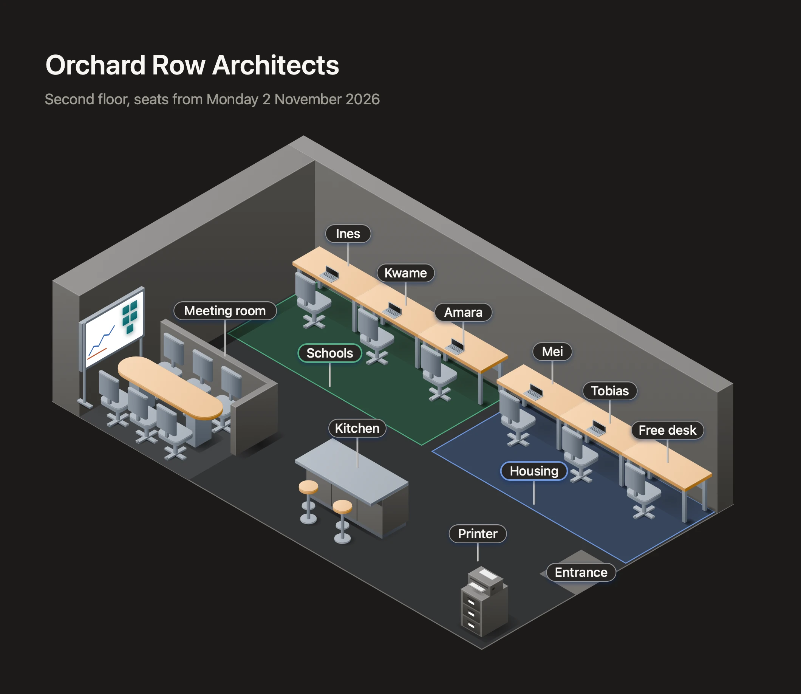

How to draw an isometric office floor plan
PUBLISHED 2026-11-06
A flat floor plan is drawn for people who read floor plans: architects, facilities teams, the fire officer. Everyone else squints at it. An isometric plan, drawn as if you were looking down at a corner of the room, shows the same floor as a place: desks with chairs, a kitchen with an island, a meeting room with a table. A new starter can find their desk on it, and a team can see where it’s moving to.
This article is a method for isometric floor plans that people read at a glance: for an office move, a seating plan or a welcome pack. It works in any tool that draws isometric. The last part shows where Diagrove helps.
Know when isometric is the right choice
Isometric is good at showing what a space is like and where things are in it. It’s poor at measurement: distances along its three axes are true, but nothing can be measured diagonally, and walls hide what’s behind them. So:
- Use isometric for people finding their way: seating plans, office moves, a shop’s layout, an event site, a server room for a non-technical reader.
- Use a flat plan for anyone who needs dimensions: a fit-out, a furniture order, a fire plan.
Many moves need both. Draw the flat plan first, from the real dimensions, and the isometric one from it.
Draw it to scale
An isometric plan that isn’t to scale looks wrong even to people who couldn’t say why: a desk the size of a meeting room, a corridor too narrow to walk down. Pick one scale, such as one grid square for 50 centimetres, and draw the walls from the real dimensions. Then use furniture drawn to the same scale, not icons of a nice size.
Keep to one viewpoint, the corner the reader looks down from. Choose the corner that shows the most of what matters, usually the one opposite the entrance, so the entrance is at the front.
Walls low, or only two
Walls are where isometric plans go wrong. Draw all four at full height and they hide half the room. The usual answer is to draw only the two walls at the back, full height, and leave the front ones out or very low, as if the room had been cut open. Doors and windows on the back walls show where people come in and where the light is.
Show the zones with colour, and only the zones
Colour is the fastest way to say who sits where. Give each team one colour and use it on the floor under their desks, not on the desks themselves, so the furniture stays readable. Use light tints for the floor zones, and keep strong colours for the few things people must find: the entrance, the fire exits, a free desk.
Use the same colour for the same team on every floor and every version of the plan. People remember “we’re the blue area”.
Label people and places, facing the reader
Labels on an isometric plan lie on the floor and read at an angle, which is tiring. Labels that stand up and face the reader, like little signs on pins, read as easily as a list. Label:
- each desk with the person’s name, or each zone with the team’s name, but not both at full size;
- every shared room: meeting rooms, kitchen, quiet room, printers;
- the entrance and the way out.
Leave the furniture unlabelled. A desk is obviously a desk.
Leave space, and leave things out
A plan that shows every plant, bin and cable is a picture, not a plan. Leave out what nobody needs to find. Leave space around the labels so they don’t overlap the furniture behind them. If the floor is big, split it into two plans, one per wing, rather than shrinking everything.
Date it, and mark what’s changing
Seating plans change. Put the date the plan takes effect in its title (“Second floor, seats from Monday 2 November”), and when you send a new version, say what changed: who moved, which desks are new. A plan without a date gets trusted long after it’s wrong.
How Diagrove helps
Diagrove is a diagramming app for Mac and iPad, with isometric canvases and stencils drawn for them.
Start from the Office floor template. Office floor is an architecture practice’s second floor: two back walls at full height, desks with chairs and laptops, team zones coloured on the floor, labels on pins that face the reader, a meeting room, a kitchen, a printer, a free desk and the entrance, with the date under the title. Choose File › New from template… (Shift-Command-N) on the Mac, then Spaces and Office floor, or Choose a template on iPad.

Things stand where you put them. On an isometric canvas everything lies on the floor or against one of the two walls, at its own elevation, and Diagrove works out what is in front, so you never sort the drawing order by hand. Option-drag on the Mac raises a graphic to stack it, such as a monitor on a desk. Iso shapes have a height handle, cast a soft contact shadow, and take their three faces’ colours from one tint, lit from the top left. See Isometric canvases.
Furniture at true scale. The Stencils tab’s Places category has offices, homes, shops, venues and warehouses, and People has isometric people. The Office floor template is built from the isometric stencils: the desks, chairs, whiteboard, meeting table and filing cabinet are Office scenes stencils, the kitchen island is from Home and furniture, the laptops and printer from Devices. One tint recolours a stencil whole, every face of it, so a team’s chairs can take the team’s colour. See Stencils and tints.
Labels that face you. Turn on Face the viewer for a flat graphic, such as a name label, and it stands upright facing the reader wherever it is on the floor.
Both papers. Every template comes on White or Ink paper, and a document keeps its paper in light and dark appearance. Ink suits a plan shown on a screen at an all-hands.

Start with your next move
Draw the floor people are moving to, to scale, with two back walls, team colours on the floor and a label for every person and shared room. Put the date in the title.
- See the Office floor template and the other Spaces templates: a home network, a warehouse, a data centre, a shop and an event venue.
- Follow the tutorial An isometric office floor: build a planter, stack a plant on it, seat someone at the free desk and add people.